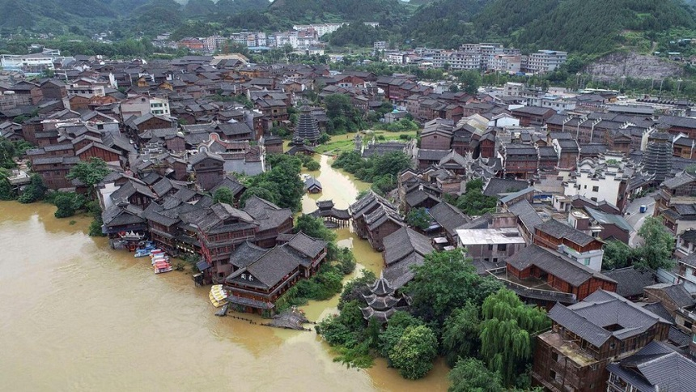

sự kiện:tin nóng
Theo cảnh báo của Đài khí tượng Trung ương Trung Quốc, ngày 29/6, các tỉnh thành như Quý Châu, Hồ Nam, Hồ Bắc, An Huy, Giang Tô, Thượng Hải... sẽ xuất hiện mưa vừa và mưa rất to. Trong đó, một số nơi thuộc Giang Tô, Thượng Hải sẽ xuất hiện lượng mưa lớn trong thời gian ngắn với lượng mưa vào khoảng 30-50mm/h, kèm theo hiện tượng thời tiết bất thường.
Đây đã là ngày thứ 27 liên tiếp (từ ngày 2/6-28/6) Đài khí tượng Trung ương Trung Quốc ra cảnh báo về mưa lớn trên các địa phương của nước này, điều hiếm thấy từ trước đến nay
Theo báo cáo của Bộ quản lý khẩn cấp Trung Quốc, đợt mưa lớn kéo dài từ đầu tháng 6 đến nay đã gây thiệt hại nghiêm trọng cho 26 tỉnh thành của Trung Quốc, đặc biệt là khu vực miền Nam với hơn 13 triệu người bị ảnh hưởng.
Nhiều người lo ngại, mưa lũ lịch sử từ Trung Quốc có thể ảnh hưởng đến Việt Nam. Đặc biệt, có những thông tin cảnh báo về nguy cơ vỡ đập Tam Hiệp, thuộc tỉnh Hồ Bắc (Trung Quốc) – đập thủy điện lớn nhất hành tinh có thể gây ra nhiều hệ lụy.
Ông Nguyễn Hoàng Hiệp - Thứ trưởng Bộ Nông nghiệp và Phát triển Nông thôn cũng cho rằng, mưa lũ ở Trung Quốc hiện nay không ảnh hưởng đến Việt Nam. “Toàn bộ nước lũ sẽ đổ ra biển ở phía Nhật Bản, không đổ ra Biển Đông nên không ảnh hưởng gì đến nước ta”, Thứ trưởng Hiệp chia sẻ. Trước những nguy cơ lo ngại về vỡ đập Tam Hiệp sẽ ảnh hưởng tới Việt Nam, Thứ trưởng Nguyễn Hoàng Hiệp thông tin, đập Tam Hiệp cách khá xa Việt Nam nên nếu có rủi ro xảy ra thì Việt Nam vẫn nằm trong vùng an toàn.